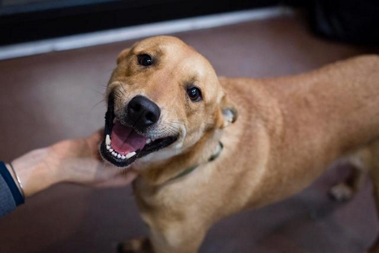

Adote aqui
Eles adoram a companhia de seus humanos, amam carinho, colo, sofá e dormir junto na cama. Pode acreditar, não há nada mais gostoso do que um gato ronronando em cima de você e demonstrando o quando fica feliz com a sua companhia.

Vários estudos já mostraram o bem que um pet faz à saúde das pessoas. Além disso, ter um animalzinho em casa resulta em passeios que estimulam os exercícios, melhoram a pressão sanguínea e evita que o dono apresente indícios de depressão, ansiedade ou estresse.